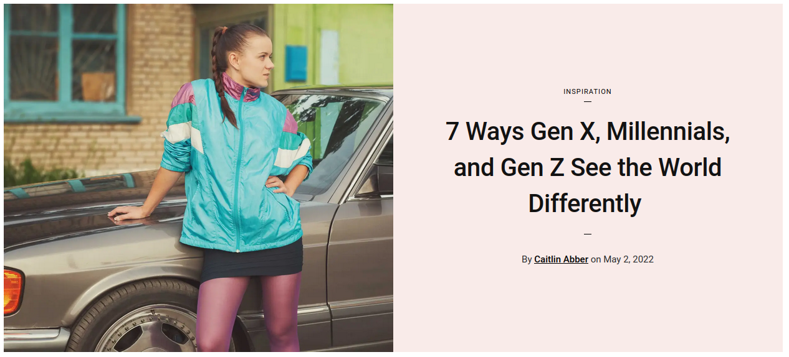

Forfatter: AH
Kapitel 1
Youth Culture
Actions and attitudes attributed largely to the youth of a particular time period can be described as youth culture. There are many examples of youth culture and subcultures in society.
How do we define youth culture
Youth culture refers to the cultural practices and values that are shared by young people within a society. It can include things like music, fashion, technology, and social media, as well as the ways in which young people interact and communicate with one another.
Youth culture truly developed in the 20th century when it became more common for adolescents to gather together than in past centuries. Compulsory schooling and other societal changes made the joint socialization of adolescents more common.
Throughout the twentieth century, youth have had a strong influence on both lifestyle and culture. An emphasis on clothes, popular music, sports, vocabulary and dating typically sets youth apart from other age groups, though there are many constantly changing youth subcultures within youth culture.
For decades, adults have worried that youth subcultures were the root of moral degradation and changing values in younger generations. Youth culture could be characterized as the embodying of values that are “in conflict with those of the adult world”.
A subculture refers to a smaller group of people who stand separate from the mainstream culture as they share slightly different beliefs, ideas, traditions, and values. Subcultures usually share a lot in common with the mainstream culture - pediaa.com
Subculture and Counterculture
Subculture and counterculture are two cultural phenomena that have been around for many years. Both concepts are closely related to the idea of rebellion and the rejection of dominant cultural values. Subculture refers to a group of people who share a similar set of beliefs, values, and practices that differ from the larger culture they are a part of. They are often associated with particular music genres, fashion, or other forms of creative expression.
Counterculture, on the other hand, is a cultural movement that actively opposes or challenges the dominant cultural values and norms. Countercultural movements are often characterized by their rejection of traditional authority and their desire for social change. This can manifest in a variety of ways, including anti-war activism, environmentalism, or alternative forms of lifestyle and spirituality.
The 1960s and 1970s were a time of great social upheaval, and many countercultural movements emerged during this time. For example, the hippie movement of the 1960s was a countercultural movement that advocated for peace, love, and freedom. The punk movement of the 1970s and 1980s was another example of a countercultural movement that was characterized by its rejection of mainstream values and its embrace of individual freedom and creativity.
Subcultures and countercultures continue to play a significant role in shaping cultural trends and attitudes today. The internet and social media have made it easier for people to connect and share ideas with like-minded individuals, allowing subcultures and countercultural movements to thrive and grow. From the alternative music scene to the rise of veganism, subculture and counterculture are important forces that challenge the status quo and shape our cultural landscape.
In conclusion, subculture and counterculture are two cultural concepts that have had a significant impact on society. Whether through music, fashion, or other forms of creative expression, subcultures and countercultures continue to challenge dominant cultural values and provide a platform for individual expression and social change.
Task
Read the article in the link below:
In small groups, talk about some of the differences between Gen x, Mellennials, and Gen Z.